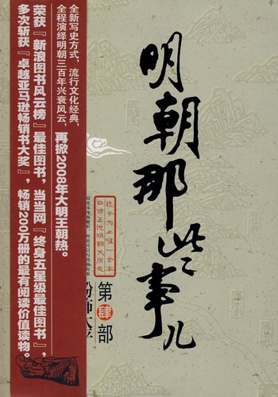

《明朝那些事儿》

《明朝那些事儿(三)》:这篇文主要讲述的是从1344年到1644年这三百年间关于明朝的一些事情，以史料为基础，以年代和具体人物为主线，并加入了小说的笔法，对明朝十七帝和其他王公权贵和小人物的命运进行全景展示，尤其对官场政治、战争、帝王心术着墨最多，并加入对当时政治经济制度、人伦道德的演义。算是我的心血之作。《明朝那些事儿》第三册接续上篇，从明英宗朱祁镇成功复辟的"夺门之变"后写起，叙述了忠奸不分的朱祁镇听信谗言，杀害曾救其于危难之际的大功臣于谦，而这也成为他继"土木堡之变"后在历史上留下的又一大污点。而在他病逝后，相继继位的两位皇帝宪宗和孝宗，一个懦弱不堪无所作为，一个心有余而力不足，撂下的这副重担落在了明代三百年中最能闹的一个皇帝--朱厚照身上，宠八虎，建豹房，自封威武大将军，朝廷中充斥幕幕荒唐的闹剧，局势更是动荡不安，这时便引出了一位亘古罕有的文武奇才--王守仁，他清剿盗寇，平定叛王，勇斗奸宦，给后人留下了许多近乎神话的不朽传奇--同时，本书中仍然不乏大量描写精彩的权谋之术、战争之术、诡诈之术，相信它会一如既往地深深吸引你的眼球。
中国最后一个汉人王朝兴衰的全程解说，掀起2007年大明王朝热。新浪博客狂飙突进2006推出说史明星，每月点击率超过百万的超强人气巨作。历史本身很精彩，历史可以写得很好看!三百年明朝那些事儿，从我们的第一位主人公写起，作者慢慢写，您慢慢看。当年明月，2006心灵历史开创者，强调写史即写人，写人即写心。以长文《明朝那些事儿》狂飚突起于天涯论坛，后转战新浪，天涯、新浪月点击率均力超百万，引起"明矾"骚乱。相关事件被媒体命名为"明月门"。历史是千百万人的历史，是大家的历史，每个人都有解读历史的权力。《明朝那些事儿》的确是别开生面的，是一种创造。我热情地支持这种探索和创造!期待他把这三百年写完。--毛佩琦(央视百家讲坛主讲)
作为朱元璋的后人(家谱力证)，能够看到你这样好的文章真是三生有幸。
--竹筏渡海(网友.有家谱证明是朱元璋×重孙)
文章以通俗的小说方式，用瑞士表匠的耐心，德国制造工人的严谨，法国酿酒师的情怀，美国戏剧演员的幽默(化身为魔语)讲述了600多年前那段波澜壮阔的元末农民起义，并将继续讲述至明末的276年历史。此文做工严谨而又不乏幽默，可做明史普及读物，也可用于茶余饭后消遣，皆是居家旅行、学习阅读、无事消遣之首选读物。
--接近真理的理(网友，归纳中心思想形成条件反射的学生)
《明朝那些事儿》中的政治争斗、权谋之术、战争之术满足了国人的胃口。我很怀疑这个作者是不是一个政府官员。《明朝那些事儿》一是好看，二是正好起到了普及历史的功能，并且普及的还是正史。所以喜欢读它的人群会特别宽泛。我预感它会大红大紫。
--周枝羽(文学博士)
我的读后感:
1.成功者一定是要经历许多磨难的，只有这样，朱重八才是朱重八。
2.为人之道，处世之道--做事不要太专心，开始做人时要低调。
3.权术是很重要滴，不懂权术，就不是朱老大登位而是兄弟们当皇帝了。
4.大脚女人可以旺夫。现在女生都不裹脚了，随便找谁做老婆都可以放心了 !
5.明朝那些好玩的事儿课堂上学不到。
我有个宏大的愿望，希望大伙能坚持不懈地一起将《明朝那些事儿》直接顶入中学课堂，成为每个中学生必备的书!
--潜水潜到2008年(网友，热心中学教育者)